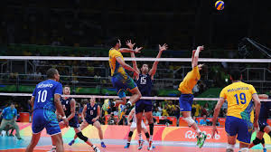
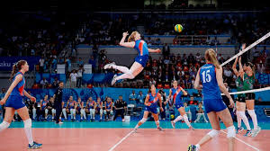

TIN TỨC - SỰ KIỆN NỔI BẬT

Volleyball
Bóng chuyền là 1 môn thể thao Olympic, trong đó 2 đội được tách ra bởi 1 tấm lưới. Mỗi đội cố gắng ghi điểm bằng cách đưa được trái bóng chạm phần sân đối phương theo đúng luật quy định
Bóng chuyền là 1 môn thể thao Olympic, trong đó 2 đội được tách ra bởi 1 tấm lưới. Mỗi đội cố gắng ghi điểm bằng cách đưa được trái bóng chạm phần sân đối phương theo đúng luật quy định

Luật chơi Volleyball
Lượt bóng tiếp tục, với mỗi đội được phép chạm bóng nhiều nhất 3 lần liên tục, đến khi một trong 2 điều xảy ra : đội thắng lượt bóng, làm cho trái bóng chạm được mặt đất phần sân đối phương: đội phạm lỗi và thua lượt banh. Đội thắng lượt bóng ghi được 1 điểm, và được phép giao banh ở lượt tiếp theo. Lỗi chạm lưới: chạm vào lưới trong khi lượt bóng chưa kết thúc
Lượt bóng tiếp tục, với mỗi đội được phép chạm bóng nhiều nhất 3 lần liên tục, đến khi một trong 2 điều xảy ra : đội thắng lượt bóng, làm cho trái bóng chạm được mặt đất phần sân đối phương: đội phạm lỗi và thua lượt banh. Đội thắng lượt bóng ghi được 1 điểm, và được phép giao banh ở lượt tiếp theo. Lỗi chạm lưới: chạm vào lưới trong khi lượt bóng chưa kết thúc
Kỹ thuật chơi bóng
Có khá nhiều kĩ thuật chơi trong bóng chuyền, bao gồm "spiking" (đập bóng) và "blocking" (chắn bóng) (bởi vì những ký thuật chơi đó được thực hiện bên trên lưới nhảy thẳng đứng là một trong những kĩ năng được chú trọng trong thể thao) cũng như "passing" (bắt bước 1), "setting" (chuyền 2), và các vị trí chơi đặc thù và cấu trúc chơi phòng thủ và tấn công.
Có khá nhiều kĩ thuật chơi trong bóng chuyền, bao gồm "spiking" (đập bóng) và "blocking" (chắn bóng) (bởi vì những ký thuật chơi đó được thực hiện bên trên lưới nhảy thẳng đứng là một trong những kĩ năng được chú trọng trong thể thao) cũng như "passing" (bắt bước 1), "setting" (chuyền 2), và các vị trí chơi đặc thù và cấu trúc chơi phòng thủ và tấn công.